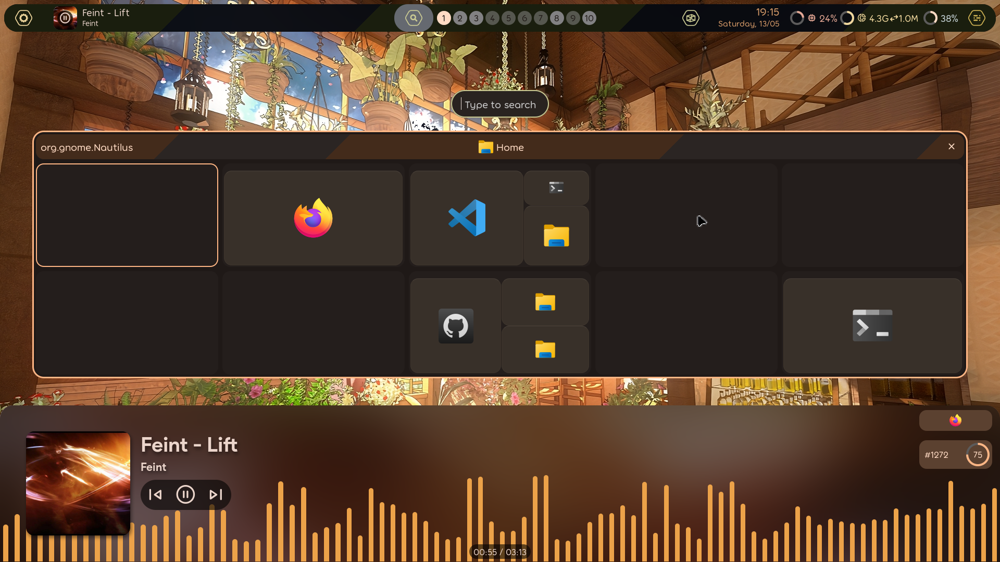
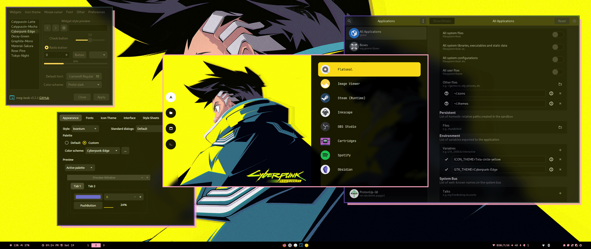
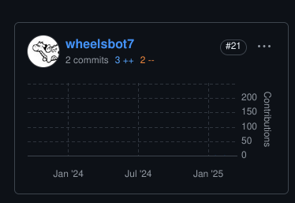

The Wonderful World of Dotfiles
I love it when names have a deeper meaning behind them, both linguistically and conceptually. Those etymology charts in online dictionaries always fascinated me, like little maps of interpretation. Conceptually, I have SCP-4000 to thank for my love of name-based magic. Oh, sorry I meant to say THAT ONE PLACE WITH THE FAIRIES IN A FOREST THAT CAN’T BE REFERRED TO WITH THE SAME NAME TWICE.
But as you’ve probably guessed, today I want to talk about something named so
literally I can’t help but love it. There’s nothing to read into, nothing to
extract hidden meaning from. It’s as subtle as a sledgehammer and as elegant as
a cinder-block. Dotfiles are called that because hidden items in a file manager
are prefixed with a period. Personally, this radical simplicity is a breath of
fresh air. Not just the name, but hiding sensitive files behind such a
straightforward barrier. Windows requires you to type out %appdata% every
single time, and sometimes it’s in %localappdata% or the Documents folder or
some other app-specific folder. I’ve been confused by Linux’s lack of a “Program
Files” folder but it’s worth it if I can find the files I’ll actually edit.
The main strength of Linux has always been its customization, but that inevitably scares off people who don’t care. It’s like that old community in-joke: “The best part of Linux is that you can customize anything, the worst part of Linux is that you have to customize everything”. Thankfully, the existence of a dotfiles folder partially negates this potential hurdle by making it trivial to copy someone else’s setup. Which brings me to the reason I wanted to make this post, and the software I’m currently writing in…
Neovim
Neovim is a heavily refactored fork of Vim , which was a clone of VI, which was the visual mode of a command line text editor called EX, which was an optimized version of ED, which was a Unix port of QED1. This is relevant because beyond modernizing an ancient program, Neovim was designed for extensibility. Fitting considering how far back its roots stretch. And make no mistake, those roots are still there. EX was a complete rewrite, so only design decisions remain from ED and QED, but beyond that? There’s C code from the 70’s running under the hood, providing the exact same functionality it did back then. Imagine if all software preservation was this easy! No emulation, no compatibility layers, no nothing, just CPU instructions triggered on key press.
Anyway, the point of going over Neovim’s dumb-as-bricks foundations was to show how easily dotfiles can transform a program into something unrecognizable (and if you aren’t careful, something far less usable). As tempting as it is to copy and paste someone else’s setup, it really pays off to know the ins and outs of whatever program you’re configuring. That’s always the tradeoff, technical experience is never “optional”, it just might take a while before it becomes mandatory. Neovim’s extensibility means that pre-configured setups aren’t just appealing, they’re almost required. Thankfully, someone smarter than me also noticed this and created a set of dotfiles that pulls double-duty as both a functional configuration of Neovim, and an annotated guide to every part of the program.
Kickstart.nvim
Kickstart.nvim is a Neovim configuration that I think everyone should use, at least to start with. A common sentiment from more technically experienced folks towards new users is RTFM, or Read The Fucking Manual. Back when you installed software from physical media, this was more or less the expectation. No Clippy, no labels or visible keymaps, you were just expected to spend a week going through >100 pages of technical documentation covering every single function and use case. Kickstart.nvim preserves some of this philosophy by heavily relying on the leader + s + h command, which pulls up a search box that scrubs the built-in manual for more detailed documentation on whatever you might need help with. The only “required reading” is presented in a simple, no-frills, Mike Ehrmantraut “Here’s what you’re gonna do” format.
Tip
So here’s what you’re gonna do. You’re gonna go to Kickstart.nvim’s GitHub page. You’re gonna fork the repository, just like it tells ya. You’re gonna install the dependencies listed in the README, doesn’t matter which OS you’re on, there’s options for all of ’em. You’re gonna find your Neovim config folder and clone your forked repository right in there, nice and clean. You’re gonna open up your favorite terminal and type “nvim”, if any errors pop up, you mucked something up. No big deal, just go back to the README and make sure you did every step just like it told ya. You’re gonna keep doing that, and once you’re done, you’re gonna type “:Tutor”. You’re gonna do what it says until you got a basic grasp on Vim-style editing. Once you’re confident in that department, you’re gonna type “:e $MYVIMRC”. From there, you read what it tells you, write it down if you have to, just pay attention and restart after any changes to avoid pouring over every line looking for which one caused an error. You got all that?
Well you better have, because up next are the advanced setups with a ton of pre-configured features that are definitely more usable out of the box, but work best as examples or inspiration, not an all-in-one shortcut.
NVChad

A wildly popular choice, NVChad has a lot going for it. It’s beautiful, for one thing. It’s clear a lot of work was put into their custom base46 theming plugin. Their custom UI plugin as a whole does a lot of work in turning Neovim into something that looks like an IDE. Let’s see the docs page for it!

Oh… That’s helpful. Well what about base46? The theming plugin must have some stuff about custom themes and whatnot, right?

Huh.
This is very much a “me thing” but this docs page really turned me off on NVChad. The use of custom plugins for basic features is cool to see, they very much do what they’re supposed to, but it also reminds me of the walled gardens I turned to Neovim to avoid. If you want to get base46 working with any other plugin, you’ll find that NVChad doesn’t mix well with anything but itself. This, to be clear, is totally fine on its own. NVChad already provides more than enough, and I can say you’ll have a fine experience even if you only use default plugins. It’s just not for me. Mostly because another setup proves default functionality and customization are not mutually exclusive.
LazyVim

LazyVim is developed by the creator of the Lazy.nvim plugin manager, and was designed explicitly to provide easy customization without starting from scratch. The plugin manager itself is already the most popular one and is considered the default by most plugin developers. Compatibility and extensibility are the real strengths of this setup. Really, there’s not much else to go over, everything else that makes LazyVim great is just the inclusion of things I complained about NVChad missing. Still check out kickstart first, but after that, I wholeheartedly recommend LazyVim.
This whole “convenience vs customization” dichotomy is a common theme in dotfiles. Hell, it’s a theme in software as a whole. Arch is so customizable it doesn’t even ship with a GUI by default, which is why EndeavorOS and Manjaro exist to fill that niche. It really exists on a sliding scale. NVChad is convenient because it’s not very customizable, and vice versa for kickstart. LazyVim just happens to strike a balance that appeals to me. Don’t take my recommendation at face value. Ask yourself what you want out of a Neovim config and go from there. Or try them all and decide later! Another advantage of dotfiles is dead-simple backups and restores. LazyVim even includes a simple bash script that will do it automatically:
# required
mv ~/.config/nvim{,.bak}
# optional but recommended
mv ~/.local/share/nvim{,.bak}
mv ~/.local/state/nvim{,.bak}
mv ~/.cache/nvim{,.bak}
I say this because the next and last example of dotfiles I’d like to go over is a lot harder to swap out whenever you please, because it configures something much more fundamental than a text editor.
Hyprland

Hyprland is a lot harder to configure on your own, as it ships with no default keybinds. Every single action must be set manually, and it’s hard to know which actions will be used more often without already having experience navigating a tiling window manager. This is where pre-configured dotfiles would be really useful, but the problem there is that each configuration has different bindings for simple actions with the only common link being the use of the “Meta”3 key as a modifier. That much makes sense, that button is normally only used for basic desktop environment actions, and Hyprland is effectively filling that role. But if you look at the list of official and unofficial desktop environments on ArchWiki, you won’t find Hyprland there. That’s because the definition of a desktop environment is really fuzzy and despite containing its own ecosystem of utilities, Hyprland is just a lot easier to categorize as a Wayland compositor. This is way more specific, as it involves the bare-metal processes that decide which pixels light up and when.
Writing a custom config for something so fundamental may seem daunting or dangerous, but Wayland compositors are very easy to replace. Even if you mess something up, the damage won’t spread anywhere else, and you can easily boot into a different compositor to fix things. There are 3 pre-configured setups I’d like to take a look at, just like Neovim. But unlike Neovim, the whole “convenience vs customization” scale doesn’t stretch as far. Any DIY experience similar to Kickstart.nvim would just have you staring at a blank screen, and that’s no way to learn. Instead, a more useful scale for Hyprland is “Dazzling vs. Daily Driver”.
Honestly I’m surprised it took me this long to talk about ricing, as it’s a pretty important part of dotfiles. The term is an acronym from car culture, where RICE stands for “Race Inspired Cosmetic Enhancement”4. A good example is when you put a massive, flashy spoiler on an ordinary vehicle you’d find in an office parking lot. Obviously your 2008 Honda Civic doesn’t need any downforce, it’s not gonna lose grip going 70mph in a straight line. But because high-performance racing cars have those features, they end up being desirable even without the benefit it was designed to provide.
Hyprland ricing is kind of like that, because while many features are designed for productivity, their inaccessible and technical nature can make you feel more experienced, even if it’s not necessarily making you more productive. The first config I want to cover is literally called “My Linux For Work”, and there are still plenty of unnecessary flourishes that serve exclusively to make the desktop more aesthetically pleasing.
ML4W (My Linux For Work)

This config is firmly planted on the “Daily Driver” side of the spectrum. I mean, you saw the title, it had to be abbreviated because who has the time to type out “My Linux For Work” every time? This is a busy config for busy people. But at the same time, the main reason tiling window managers are generally faster is keyboard shortcuts, and if you’re coming at this from a work perspective, you’re not gonna put aside an hour to learn how to use something you don’t technically need. Maybe this is biased from years of working with boomers who never knew you could save a document with CTRL + S, but the point still stands that if you expect people to use something for work, you can’t just chuck a manual at them and leave them to the wolves.
This config comes with 3 main convenience tools: a configuration GUI app, a
dedicated keybind for searching keybinds, and a functional top-bar that ensures
every essential action is still doable with just a mouse. This might seem
similar to NVChad’s walled garden approach, but the backend here isn’t some
bespoke system, all it does is save whatever you punch into the inputs as
~/.config/hypr/hyprland.conf. It’s the thinnest possible layer between the
user and their dotfiles, which is how it should be! My only problem with this
system is how it gets around the .config folder being hidden by default. In
order to have everything visible, it places a shortcut5 in your actual
.config folder that points to an entirely new folder in the user’s home
directory.
But, ultimately, this doesn’t bother me nearly as much as NVChad. This bit of restructuring can easily be worked around or fully reversed. This is still a configuration for Hyprland, it’s not trying to add exclusive systems or deeply integrated apps like a fully-fledged desktop environment. That distinction goes to the most popular Hyprland config on GitHub, and one that went through a major restructuring while I was writing this.
HyDE (formerly Hyprdots)

I gave this one a shot when it was still Hyprdots, and fully bounced off of it when I saw that one of the themes was called “edge-runners” and looked like this:

Looking back on it, that was pretty shallow of me, but the sentiment wasn’t necessarily faulty. There are a ton of rices out there that are fully themed around a specific media property (usually anime), and that’s a pretty reliable sign that they were made specifically for 1 screenshot before reverting back to something actually usable. Far from ML4W, this is closer to ML4Reddit. But it seems this focus on style payed off, since their now abandoned GitHub repository currently sits at 8.7k stars. While I wasn’t looking, it appears the original creator went radio silent and the only collaborator left forked the project with a rebrand. They’re currently putting the dotfiles through a major tune-up with a clear plan moving forward, so give it a look if you know your way around dotfiles or shell scripts, they could use the extra hands.
Anyway, since I am nothing if not predictable, there’s a third option I personally use and that I think bridges the gap between form and function in a way that makes it easy to recommend. To avoid repetition, I’ll try to write the next section as a series of Haikus. Predictability was never in the cards.
KooL’s Hyprland Dots

This one’s really fun
It’s easy to customize
And easy to use
Works on more than Arch
Nix, Fedora, Ubuntu
Even Tumbleweed
No custom apps here
Just a bunch of helper scripts
That are bound to keys
Also I’m biased
I contributed some code
I love open source

Conclusion
The phenomenon of dotfiles exemplifies my favorite part of open source. People can just share what works for them and you can yank it for yourself, tear out all the parts you don’t like, and add whatever you want! It also just feels great after years of putting up with a bunch of little annoyances with Windows that Microsoft wouldn’t let me fix. No wrestling with OneDrive, Edge, or Updates, and if I do have to mess with something, there’s not a multi-billion dollar corporation working to make it harder. I will take 1000 dependency conflicts over 1 mandatory update every time.
Signing off: Wheelsbot
Down in the .conf mines, and the shift never ends.
-
Which stands for Quick EDitor, if you were wondering. ↩︎
-
Sidenote to this sidenote, but I didn’t expect so many car terms to end up in this post. Guess there’s a lot in common between 2 groups obsessed with optimizing a machine past the point of practicality. ↩︎
-
Also called the “Super” key, but more easily recognizable as the Windows key ↩︎
-
It’s worth mentioning that this is a post-hoc acronym. It’s generally agreed that it’s called “ricing” because it sounds like racing, and the practice started in Asian countries2. ↩︎
-
Technically a “symlink”, meaning symbolic link, but it’s basically the same thing. Symlink just sounds cooler and brings to mind the image of a portal connecting 2 points in your files. I guess it just feels more concrete when you can
cdthrough a shortcut instead of just double-clicking it. ↩︎